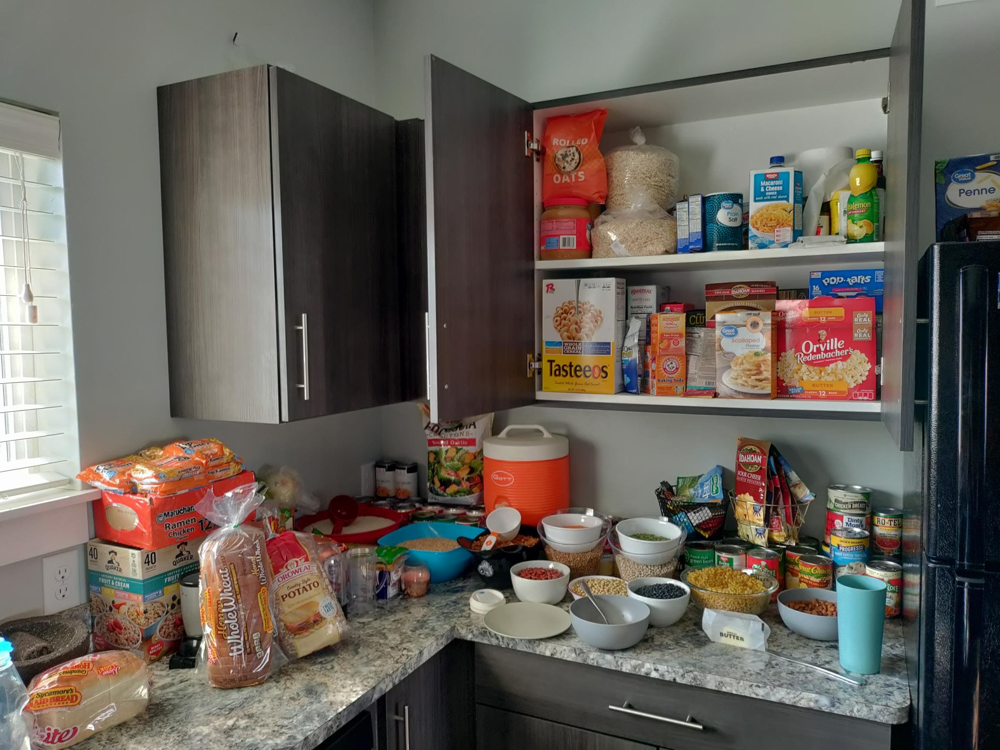

Oven and Counter Tops

Prepare:
If you are like most people, the oven is a nightmare. It doesn't have to be if you have the right stuff.
Depending on how bad your stove and oven are you might not even need oven cleaner. I use a hot soapy rag and a glass scraper/razor on the inside of the oven.
Make sure that it does not scratch the surface or you will be charged for damage fees. Before you clean the oven, make sure that everything
has cooled down. (NEVER USE THE SELF CLEANING BUTTON! YOU WILL FAIL!) Once the oven has cooled, wipe out all the grease and grime with a hot soapy rag.
Hopefully, the water and soap is breaking down any stains or spots. Once you wipe out all of the grime you can gently use the razor
to lift any remaining marks. The oven should look shiny at this point.

If you do use oven cleaner be sure to wear gloves and wipe all the cleaner out. If you leave it in the oven it will turn into a chalky
powder that coats your entire oven. You will fail if the sides of the oven are not shiny.
Lift up the stove top and clean underneath. Take out the drip pans and let them soak in hot water for several hours scrubbing every 10 minutes.
If the drip pans look absolutely hopeless, don't be afraid to ask managment for a new set of drip pans or you can buy some yourself for about $5.
Coordinate:
This job requires no coordination between you and your
roommates. Just make sure that you clean up your mess and don't leave the sink dirty if the other person has
already cleaned that.

Cleaning Tips and Making it Fun
Don't forget to dance, sing and have fun.
clean out all oil, grime, and burnt food out of the oven.
Use a hot soapy rag or all purpose cleaner on counters.
Don't forget to sweep and mop the kitchen floor.